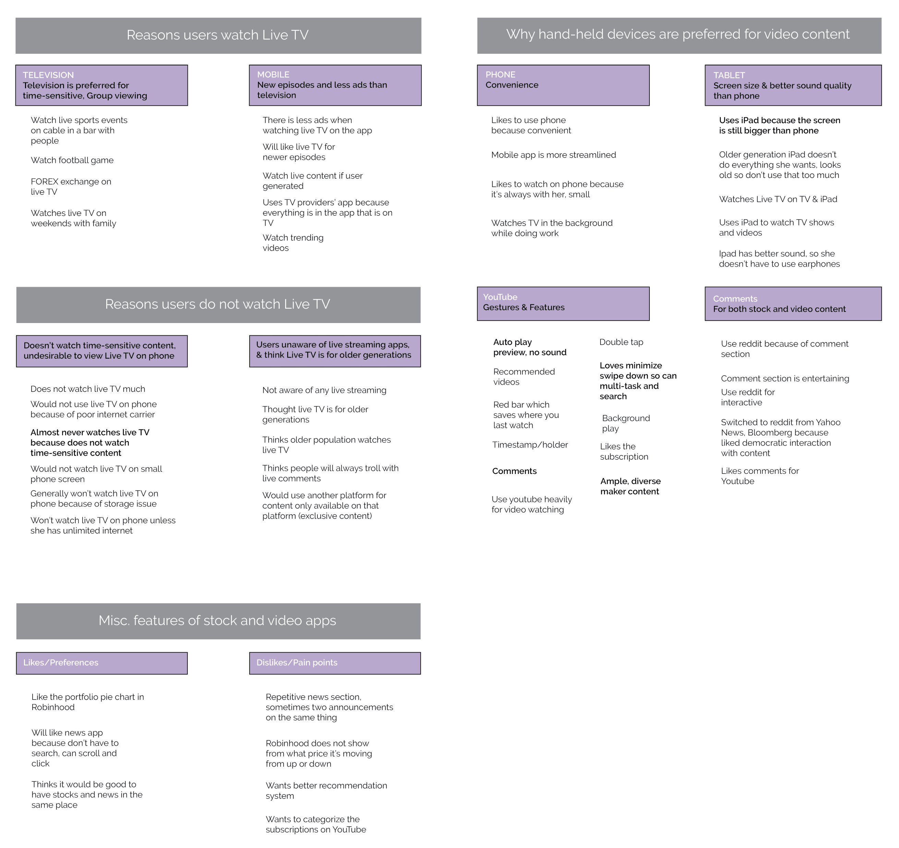

The following is from a Student UX Consultant project with CNBC, through the University of Michigan.
This redesign of the CNBC iOS app for mobile devices focused on gesture use and accessibility for the Markets and Live ‘CNBC TV’ sections of the app.
An initial scoping session with Emerging Platforms Team Reps identified:
- Redesign Scope: Improve gesture use & accessibility of Markets & Live TV pages.
- Competing applications for competitive analyis (See Step 4)
- Current user:(Age:35+ Passive Investor)
- New/Target user: (Age:20+ Aspirational Viewer, Millenial, Young Professional)
How do user behaviors in existing finance and video applications influence gesture expectations for the CNBC iOs application?
Interaction Map (identify Pain Points)
User Interviews (understand current expectations & behaviors with video & cable TV applications)
Comparatitive Analysis (compare competing financial and video mobile applications)
Usability Study & Task Observation (identify attempted gestures and expected UI elements)
Survey & Analysis (contextualize interview results against survey of 81 millenials)
Hi-Fi Mockups (actualize findings with testable redesigns)
Preference Test (determine if users prefer the original or redesigned interfaces)
Research into industry competitors via finance media, as well as preliminary interviews illuminated the following competitors:
- Direct: Bloomberg
- Indirect: Wall Street Journal (website)
- Partial: Marketwatch, IG TV, ABC, YouTube Live, Yahoo Finance
- Parallel: Robinhood
- Analogous: Netflix
"Matrix 1: Criteria for Competitor Categories" justified how each competitor was categorized as direct, indirect, etc. with criteria for each category.
"Matrix 2:Binary Matrix of all Competitive Products" compared utility (gestures) & display features.
"Matrix 3: Direct Comparison between CNBC & Bloomberg mobile applications"compared more of the unique utility (gestures) & display features of the direct competitor (Bloomberg).
Analysis Findings:
- Color-coded, overlay comparison of stock charts is crucial for comparing correlation
- The majority of Video-related indirect competitors offered exclusive Content
- Video and stock recommendations help casual users get started
- An overview page gives users a better understanding of the indexes & categories availible
- New live content notifications are not common, but can help engage users
- Supporting multitasking while watching live TV/Videos is prefferred
- People like to play videos/live content in the background
- Intuitive gestures empower users
- Gestures are more habitual for users than buttons or UI elements.
Recommendations:
- Add Color-coded Overlay Stock Chart comparison option
- Notify & Display bookmarks
- Continue producing exclusive content to the app
- Customize video and stock recommendations based on activity
- Have an overview page listing the most important indexes of each category
- Reccomend new live content based on user’s subscription or watching history
- Support multitasking while watching live TV/Videos
- Offer gesture options for video: center tap for pause/play & and edge double tap for fast-forward & rewind
Interviewee Screener:
- Student-professional, or professional (infers finance management paracticality)
- Mobile video-streaming Viewer
- Some markets or finance management interest
- 18-22
Interviews found that the target user:
- Preferred watching videos on mobile over watching desktop
- Were unable to recall useful gestures since they did not consider them “features” because they were so intuitive
- Thought platforms providing frequently updated and exclusive content were more desirable
Recommendations:
- Produce exclusive content for CNBC mobile app and market to current cable TV CNBC watchers.
- Constantly update personalized user recommendations to increase viewership.
- Allow users to interact with each other on the mobile app through actions such as commenting and liking each others’ comments.
- Provide intuitive gestures and flatten interactions to minimize goal achieving time such as:
- Tap screen to pause or play
- Drag and minimize
- Double tap on the right for fast forward
- Double tap on the left fo rewind
- Time elapsed bar
- Time stamp
- Continue watching where users left off
- Video preview without sound
From the target user base of interviewees, personas that reflected the most prominent archetypes were created. This again highlighted common pain-points as well as other finance and video mobile application competitors of CNBC.


Interpretation Sessions allowed for synthesis of common findings between surveys and interviews. Transcripts were qualitatively analyzed in NVivo to quantify the severity of reoccurring pain-points. A digital Affinity Diagram was also created below.
Using the findings from the above analyes we redesigned a few key aspects of the application and conducted a preference test to see if users prefered the original version of the app to our redesign.
15 Seconds Icon
Regarding the addition of the 15 second UI element, most respondents noted that they preferred this to the original option. One respondent noted that they rarely use the skip button, while another noted that they prefer a double tap option when skipping as opposed to an icon UI element.
CC Podcast Icon
The new podcast option was the most popular amongst respondents. One person even mentioned that even though they do not have a hearing impairment, they use closed captions to understand thick accents. Additionally, users assumed yellow meant activated, and grey meant inactivated. Thus, we implemented yellow and grey to represent activated & deactivated respectively in the redesigned icons.
Yellow Bar
When shown the demonstration of the original screen, the respondents unanimously thought that the yellow bar was intended to indicate progress through the video. Therefore, they preferred the yellow bar to be absent as demonstrated in the redesign below.

Live TV Title
The new format and presence of a title at the top of the page was preferred to the original version by the majority of respondents.